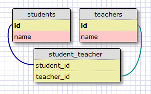
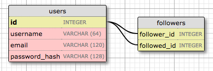

The Flask Mega-Tutorial, Part VIII: Followers
Posted by
on underThis is the eighth installment of the Flask Mega-Tutorial series, in which I'm going to tell you how to implement a "followers" feature similar to that of Twitter and other social networks.
You are reading the 2024 edition of the Flask Mega-Tutorial. The complete course is also available to order in e-book and paperback formats from Amazon. Thank you for your support!
If you are looking for the 2018 edition of this course, you can find it here.
For your reference, here is the complete list of articles in this series:
- Chapter 1: Hello, World!
- Chapter 2: Templates
- Chapter 3: Web Forms
- Chapter 4: Database
- Chapter 5: User Logins
- Chapter 6: Profile Page and Avatars
- Chapter 7: Error Handling
- Chapter 8: Followers (this article)
- Chapter 9: Pagination
- Chapter 10: Email Support
- Chapter 11: Facelift
- Chapter 12: Dates and Times
- Chapter 13: I18n and L10n
- Chapter 14: Ajax
- Chapter 15: A Better Application Structure
- Chapter 16: Full-Text Search
- Chapter 17: Deployment on Linux
- Chapter 18: Deployment on Heroku
- Chapter 19: Deployment on Docker Containers
- Chapter 20: Some JavaScript Magic
- Chapter 21: User Notifications
- Chapter 22: Background Jobs
- Chapter 23: Application Programming Interfaces (APIs)
In this chapter I am going to work on the application's database some more. I want users of the application to be able to easily choose which other users they want to follow. So I'm going to be expanding the database to keep track of who is following who, which is trickier than you may think.
The GitHub links for this chapter are: Browse, Zip, Diff.
Database Relationships Revisited
I said above that I want to maintain a list of "followed" and "follower" users for each user. Unfortunately, a relational database does not have a list type that I can use for these lists, all there is are tables with records and relationships between these records.
The database has a table that represents users, so what's needed is to come up with the proper relationship type that can model the follower/followed link. This is a good time to review the basic database relationship types:
One-to-Many
I have already used a one-to-many relationship in Chapter 4. Here is the diagram for this relationship:

The two entities linked by this relationship are users and posts. I say that a user has many posts, and a post has one user (or author). The relationship is represented in the database with the use of a foreign key on the "many" side. In the relationship above, the foreign key is the user_id field added to the posts table. This field links each post to the record of its author in the user table.
It is pretty clear that the user_id field provides direct access to the author of a given post, but what about the reverse direction? For the relationship to be useful I should be able to get the list of posts written by a given user. The user_id field in the posts table is also sufficient to answer this question, as this column was given an index, to allow for efficient queries such us "retrieve all posts that have a user_id of X".
Many-to-Many
A many-to-many relationship is a bit more complex. As an example, consider a database that has students and teachers. I can say that a student has many teachers, and a teacher has many students. It's like two overlapped one-to-many relationships from both ends.
For a relationship of this type I should be able to query the database and obtain the list of teachers that teach a given student, and the list of students in a teacher's class. This is actually non-trivial to represent in a relational database, as it cannot be done by adding foreign keys to the existing tables.
The representation of a many-to-many relationship requires the use of an auxiliary table called an association table. Here is how the database would look for the students and teachers example:

While it may not seem obvious at first, the association table with its two foreign keys is able to efficiently answer all the queries about the relationship.
Many-to-One and One-to-One
A many-to-one relationship is similar to a one-to-many relationship. The difference is that this relationship is looked at from the "many" side.
A one-to-one relationship is a special case of a one-to-many. The representation is similar, but a constraint is added to the database to prevent the "many" side from having more than one link. While there are cases in which this type of relationship is useful, it isn't as common as the other types.
Representing Followers
Looking at the summary of all the relationship types, it is easy to determine that the proper data model to track followers is the many-to-many relationship, because a user follows many users, and a user has many followers. But there is a twist. In the students and teachers example I had two entities that were related through the many-to-many relationship. But in the case of followers, I have users following other users, so there are just users. So what is the second entity of the many-to-many relationship?
The second entity of the relationship is also the users. A relationship in which instances of a class are linked to other instances of the same class is called a self-referential relationship, and that is exactly what I have here.
Here is a diagram of the self-referential many-to-many relationship that keeps track of followers:

The followers table is the association table of the relationship. The foreign keys in this table are both pointing at entries in the user table, since it is linking users to users. Each record in this table represents one link between a follower user and a followed user. Like the students and teachers example, a setup like this one allows the database to answer all the questions about followed and follower users that I will ever need. Pretty neat.
Database Model Representation
Let's add followers to the database first. Here is the followers association table. Make sure you add it above the User model in models.py, so that later the model can reference it.
app/models.py: Followers association table
followers = sa.Table(
'followers',
db.metadata,
sa.Column('follower_id', sa.Integer, sa.ForeignKey('user.id'),
primary_key=True),
sa.Column('followed_id', sa.Integer, sa.ForeignKey('user.id'),
primary_key=True)
)
This is a direct translation of the association table from my diagram above. Note that I am not declaring this table as a model, like I did for the users and posts tables. Since this is an auxiliary table that has no data other than the foreign keys, I created it without an associated model class.
The sa.Table class from SQLAlchemy directly represents a database table. The table name is given as first argument. The second argument is that metadata, the place where SQLAlchemy stores the information about all the tables in the database. When using Flask-SQLAlchemy, the metadata instance can be obtained with db.metadata. The columns of this table are instances of sa.Column initialized with the column name, type and options. For this table neither of the foreign keys will have unique values that can be used as a primary key on their own, but the pair of foreign keys combined is going to be unique. For that reason both columns are marked as primary keys. This is called a compound primary key.
Now I can define two many-to-many relationship attributes in the users table:
app/models.py: Many-to-many followers relationship
class User(UserMixin, db.Model):
# ...
following: so.WriteOnlyMapped['User'] = so.relationship(
secondary=followers, primaryjoin=(followers.c.follower_id == id),
secondaryjoin=(followers.c.followed_id == id),
back_populates='followers')
followers: so.WriteOnlyMapped['User'] = so.relationship(
secondary=followers, primaryjoin=(followers.c.followed_id == id),
secondaryjoin=(followers.c.follower_id == id),
back_populates='following')
The setup of this relationship is non-trivial. Like I did for the posts one-to-many relationship, I'm using the so.relationship function to define the relationship in the model class. But because this relationship uses the same model on both sides, both relationship attributes are defined together.
This relationship links User instances to other User instances, so as a convention let's say that for a pair of users linked by this relationship, the left side user is following the right side user. I'm defining the relationship as seen from the left side user with the name following, because when I query this relationship from the left side I will get the list of users the left-side user is following. Conversely, the followers relationship starts from the right side and finds all the users that follow a given user.
Both relationships are defined with the so.WriteOnlyMapped type, in the same way as the posts relationship. Let's examine the arguments to the so.relationship() calls one by one:
secondaryconfigures the association table that is used for this relationship, which I defined right above this class.primaryjoinindicates the condition that links the entity to the association table. In thefollowingrelationship, the user has to match thefollower_idattribute of the association table, so the condition reflects that. Thefollowers.c.follower_idexpression references thefollower_idcolumn of the association table. In thefollowersrelationship, the roles are reversed, so the user must match thefollowed_idcolumn.secondaryjoinindicates the condition that links the association table to the user on the other side of the relationship. In thefollowingrelationship, the user has to match thefollowed_idcolumn, and in thefollowersrelationship, the user has to match thefollower_idcolumn.
Don't worry if this is hard to understand. I will show you how to work with these queries in a moment, and then everything will become clearer.
The changes to the database need to be recorded in a new database migration:
(venv) $ flask db migrate -m "followers"
INFO [alembic.runtime.migration] Context impl SQLiteImpl.
INFO [alembic.runtime.migration] Will assume non-transactional DDL.
INFO [alembic.autogenerate.compare] Detected added table 'followers'
Generating /home/miguel/microblog/migrations/versions/ae346256b650_followers.py ... done
(venv) $ flask db upgrade
INFO [alembic.runtime.migration] Context impl SQLiteImpl.
INFO [alembic.runtime.migration] Will assume non-transactional DDL.
INFO [alembic.runtime.migration] Running upgrade 37f06a334dbf -> ae346256b650, followers
Adding and Removing "follows"
Thanks to the SQLAlchemy ORM, a user following another user can be recorded in the database working with the following and followers relationships as if they were lists. For example, if I had two users stored in user1 and user2 variables, I can make the first follow the second with this simple statement:
user1.following.add(user2)
To stop following the user, then I could do:
user1.following.remove(user2)
Even though adding and removing followers is fairly easy, I want to promote reusability in my code, so I'm not going to sprinkle "adds" and "removes" through the code. Instead, I'm going to implement the "follow" and "unfollow" functionality as methods in the User model. It is always best to move the application logic away from view functions and into models or other auxiliary classes or modules, because as you will see later in this chapter, that makes unit testing much easier.
Below are the changes in the user model to work with following relationships:
app/models.py: Add and remove followers
class User(UserMixin, db.Model):
#...
def follow(self, user):
if not self.is_following(user):
self.following.add(user)
def unfollow(self, user):
if self.is_following(user):
self.following.remove(user)
def is_following(self, user):
query = self.following.select().where(User.id == user.id)
return db.session.scalar(query) is not None
def followers_count(self):
query = sa.select(sa.func.count()).select_from(
self.followers.select().subquery())
return db.session.scalar(query)
def following_count(self):
query = sa.select(sa.func.count()).select_from(
self.following.select().subquery())
return db.session.scalar(query)
The follow() and unfollow() methods use the add() and remove() methods of the write-only relationship object as I have shown above, but before they touch the relationship they use the is_following() supporting method to make sure the requested action makes sense. For example, if I ask user1 to follow user2, but it turns out that this following relationship already exists in the database, I do not want to add a duplicate. The same logic can be applied to unfollowing.
The is_following() method performs a query on the following relationship to see if a given user is already included in it. All write-only relationships have a select() method that constructs a query that returns all the elements in the relationship. In this case I do not need to request all the elements, I'm just looking for a specific user, so I can restrict the query with a where() clause.
The followers_count() and following_count() methods return the follower and following counts for the user. This requires a different type of query, in which the results are not returned, but just their count is. The sa.select() clause for these queries specify the sa.func.count() function from SQLAlchemy, to indicate that I want to get the result of a function. The select_from() clause is then added with the query that needs to be counted. Whenever a query is included as part of a larger query, SQLAlchemy requires the inner query to be converted to a sub-query by calling the subquery() method.
Obtaining the Posts from Followed Users
Support for followers in the database is almost complete, but I'm actually missing one important feature. In the index page of the application I'm going to show blog posts written by all the people that the logged-in user is following, so I need to come up with a database query that returns these posts.
The most obvious solution is to use a query that returns the list of followed users, which would be user.following.select(). After executing this query, I can run a query to get the posts of each of the returned users. Once I have all the posts I can merge them into a single list and sort them by date. Sounds good? Well, not really.
This approach has a couple of problems. What happens if a user is following a thousand people? I would need to execute a thousand database queries just to collect all the posts. And then I will need to merge and sort the thousand lists in memory. As a secondary problem, consider that the application's home page will eventually have pagination implemented, so it will not display all the available posts but just the first few, with a link to get more if desired. If I'm going to display posts sorted by their date, how can I know which posts are the most recent of all followed users combined, unless I get all the posts and sort them first? This is actually an awful solution that does not scale well.
There is really no way to avoid this merging and sorting of blog posts, but doing it in the application results in a very inefficient process. This kind of work is what relational databases excel at. The database has indexes that allow it to perform the queries and the sorting in a much more efficient way that I can possibly do from my side. So what I really want is to come up with a single database query that defines the information that I want to get, and then let the database figure out how to extract that information in the most efficient way.
Below you can see this query:
app/models.py: Following posts query
class User(UserMixin, db.Model):
#...
def following_posts(self):
Author = so.aliased(User)
Follower = so.aliased(User)
return (
sa.select(Post)
.join(Post.author.of_type(Author))
.join(Author.followers.of_type(Follower))
.where(Follower.id == self.id)
.order_by(Post.timestamp.desc())
)
This is by far the most complex query I have used on this application. I'm going to try to decipher this query one piece at a time. Ignoring for now the two so.aliased() calls, when you look at the structure of this query you are going to notice that there are four main sections defined by two join() clauses, where() and order_by():
sa.select(Post)
.join(...)
.join(...)
.where(...)
.order_by(...)
Joins
To understand what a join operation does, let's look at an example. Let's assume that I have a User table with the following contents:
| id | username |
|---|---|
| 1 | john |
| 2 | susan |
| 3 | mary |
| 4 | david |
To keep things simple I am not showing all the fields in the user model, just the ones that are important for this query.
Let's say that the followers association table says that user john is following users susan and david, user susan is following mary and user mary is following david. The data that represents the above is this:
| follower_id | followed_id |
|---|---|
| 1 | 2 |
| 1 | 4 |
| 2 | 3 |
| 3 | 4 |
Finally, the posts table contains one post from each user:
| id | text | user_id |
|---|---|---|
| 1 | post from susan | 2 |
| 2 | post from mary | 3 |
| 3 | post from david | 4 |
| 4 | post from john | 1 |
This table also omits some fields that are not part of this discussion.
Here is the first part of the query, including the first join() clause, and for now eliminating the of_type(Author), which I'll explain later:
sa.select(Post)
.join(Post.author)
The select() portion of the query defines the entity that needs to be obtained, which in this case is posts. What I'm doing next is joining the entries in the posts table with the Post.author relationship.
A join is a database operation that combines rows from two tables, according to a given criteria. The combined table is a temporary table that does not physically exists in the database, but can be used during the query. When the join() clause is given a relationship as an argument, SQLAlchemy combines the rows from the left and right sides of the relationship.
With the example data that I defined above, the result of the join operation on the Post.author relationship:
| post.id | post.text | post.user_id | user.id | user.username |
|---|---|---|---|---|
| 1 | post from susan | 2 | 2 | susan |
| 2 | post from mary | 3 | 3 | mary |
| 3 | post from david | 4 | 4 | david |
| 4 | post from john | 1 | 1 | john |
You may notice that the post.user_id and user.id columns in the joined table have always the same value. Because I asked for a join on the Post.author relationship, which links posts to their authors, SQLAlchemy knows that it needs to match rows from the posts table with rows from the users table.
Effectively, what the join above does is create an extended table that provides access to posts, along with information about the author of each post.
Unfortunately things have to get more complicated now, because next I need to join the combined table above again to add the followers. Once I have a combined table with each row having a follower with a post they're following and the author of such post, then I can easily filter to find the posts that any given user should see.
One reason why this is so complicated is that for this query we need to treat users in two capacities. In the join above users are authors of posts, but in the second join I need to consider users as followers of other users. To be able to clearly tell SQLAlchemy how to join all these tables, I need to have a way to refer to users independently as authors and as followers. The so.aliased() calls are used to create two references to the User model that I can use in the query.
So the first join in this query, which is concerned with combining posts with their authors, can be written as follows:
Author = so.aliased(User)
sa.select(Post)
.join(Post.author.of_type(Author))
Here the of_type(Author) qualifier on the joined relationship tells SQLAlchemy that in the rest of the query I'm going to refer to the right side entity of the relationship with the Author alias.
Let's now look at the second join in the query:
Author = so.aliased(User)
Follower = so.aliased(User)
sa.select(Post)
.join(Post.author.of_type(Author))
.join(Author.followers.of_type(Follower))
For the second join I want SQLAlchemy to join on the Author.followers relationship, with Author being the alias for User defined above. This is a many-to-many relationship, so the followers association table must implicitly be part of the join as well. The users that are added to the combined table as a result of this new join will use the Follower alias.
The User.followers relationship has followed users on the left side, defined by the followed_id foreign in the association table, and their followers on the right side, defined by the follower_id foreign key. Using the example followers association table above, the table that combines the posts, with their authors, and their followers is:
| post.id | post.text | post.user_id | author.id | author.username | follower.id | follower.username |
|---|---|---|---|---|---|---|
| 1 | post from susan | 2 | 2 | susan | 1 | john |
| 2 | post from mary | 3 | 3 | mary | 2 | susan |
| 3 | post from david | 4 | 4 | david | 1 | john |
| 3 | post from david | 4 | 4 | david | 3 | mary |
There are a couple of interesting things to mention about the results of this join. First of all, now each row in the table has users that are authors and users that are followers, so it is necessary to use the aliases to avoid confusion.
The post with post.id == 3 appears twice in this joined table. Can you tell why? The author of this post is david, with user.id == 4. Looking for this user in the followers association table under the followed_id foreign key there are two entries for users 1 and 3, which means that david is followed by john and mary. Since both users have to be joined to this post written by david, the join operation creates two rows with this post, each with one of the joined users.
There is also one post that does not appear at all. This is post.id == 4, written by john. According to the followers association table nobody is following this user, so there are no followers that can be matched with it, and for that reason the join drops this post from the results.
Filters
The join operation gave me a list of all the posts that are followed by a user, which is a lot more data that I really want. I'm only interested in a subset of this list, the posts followed by only one user, so I need to remove all the entries I don't need, which I can do with a where() clause.
Here is the filter portion of the query:
.where(Follower.id == self.id)
Since this query is in a method of class User, the self.id expression refers to the I'm interested in retrieving posts for. The where() call selects the items in the joined table that have this user as a follower. Remember that Follower in this query is an alias to User that is necessary so that SQLAlchemy knows which one of the two users that are included in each row in the table the filter is based on.
Let's say the user I'm interested in is john, which has its id field set to 1. Here is how the joined table looks after the filtering:
| post.id | post.text | post.user_id | author.id | author.username | follower.id | follower.username |
|---|---|---|---|---|---|---|
| 1 | post from susan | 2 | 2 | susan | 1 | john |
| 3 | post from david | 4 | 4 | david | 1 | john |
And these are exactly the posts that I wanted!
Remember that the query was issued on the Post class, so even though I ended up with a larger table that was created by the database as part of this query, the result will be the posts that are included in this temporary table, without the extra columns added by the join operation.
Sorting
The final step of the process is to sort the results. The part of the query that does that says:
.order_by(Post.timestamp.desc())
Here I'm saying that I want the results sorted by the timestamp field of the post in descending order. With this ordering, the first result will be the most recent blog post.
Combining Own and Followed Posts
The query that I'm using in the following_posts() function is extremely useful, but has one limitation. People expect to see their own posts included in their timeline of followed users, and the query as defined above does not include the user's own posts.
There are two possible ways to expand this query to include the user's own posts. The most straightforward way is to leave the query as it is, but make sure all users are following themselves. If you are your own follower, then the query as shown above will find your own posts along with those of all the people you follow. The disadvantage of this method is that it affects the counts of followers. All follower counts are going to be inflated by one, so they'll have to be adjusted before they are shown.
The other way to do this is make the expand the query logic so that the results come either from the followed posts or from the user's own.
After considering both options I decided to go with the second one. Below you can see the following_posts() method after it has been expanded to include the user's posts through a union:
app/models.py: Followed posts query with user's own posts.
def following_posts(self):
Author = so.aliased(User)
Follower = so.aliased(User)
return (
sa.select(Post)
.join(Post.author.of_type(Author))
.join(Author.followers.of_type(Follower), isouter=True)
.where(sa.or_(
Follower.id == self.id,
Author.id == self.id,
))
.group_by(Post)
.order_by(Post.timestamp.desc())
)
The structure of this query is now as follows:
sa.select(Post)
.join(...)
.join(..., isouter=True)
.where(sa.or_(..., ...))
.group_by(...)
.order_by(...)
Outer Joins
The second join is now an outer join. Do you remember what happened to the post written by john in the previous section? When the second join was calculated, this post was dropped, because this user had no followers. To be able to include the user's own posts, first it is necessary to change the join to keep posts that have no matches on the right side of the join. The joins used in the previous section are called inner joins, and only preserve entries from the left side that have a matching entry on the right. The isouter=True option tells SQLAlchemy to use a left outer join instead, which preserves items from the left side that have no match on the right.
When using a left outer join, the joined table is:
| post.id | post.text | post.user_id | author.id | author.username | follower.id | follower.username |
|---|---|---|---|---|---|---|
| 1 | post from susan | 2 | 2 | susan | 1 | john |
| 2 | post from mary | 3 | 3 | mary | 2 | susan |
| 3 | post from david | 4 | 4 | david | 1 | john |
| 3 | post from david | 4 | 4 | david | 3 | mary |
| 4 | post from john | 1 | 1 | john | null | null |
The outer join ensures that the joined table has at least one occurrence of every post that is in the posts table.
Compound Filters
The joined table now has all the posts, so I can expand the where() clause to include both posts from followed users as well as own posts. SQLAlchemy provides the sa.or_(), sa.and_() and sa.not_() helpers to create compound conditions. In this case I need to use sa.or_() to specify that I have two options for selecting posts.
Let's review the updated filter:
.where(sa.or_(
Follower.id == self.id,
Author.id == self.id,
))
Here once again I take advantage of the aliases, without which it would be impossible to describe what I want to do. What I'm saying with this condition is that I want to get posts that have the user as a follower, or posts that have the user as the author.
Using john once again as an example, the filtered table would be:
| post.id | post.text | post.user_id | author.id | author.username | follower.id | follower.username |
|---|---|---|---|---|---|---|
| 1 | post from susan | 2 | 2 | susan | 1 | john |
| 3 | post from david | 4 | 4 | david | 1 | john |
| 4 | post from john | 1 | 1 | john | null | null |
And this is perfect, as this list contains the two followed posts plus the user's own.
Grouping
Instead of using john, let's try filtering for david:
| post.id | post.text | post.user_id | author.id | author.username | follower.id | follower.username |
|---|---|---|---|---|---|---|
| 3 | post from david | 4 | 4 | david | 1 | john |
| 3 | post from david | 4 | 4 | david | 3 | mary |
This user isn't following anyone, so the only results come from posts that the user authored. But there is a complication, in that this user wrote a single post, but due to the requirements of the joins, that post had to be duplicated, and the filtering does nothing to eliminate duplicates.
Duplication on joined tables is actually very common. If you look at the complete joined table you can also see that john appears twice as a follower. Because these joins include a many-to-many relationship, both sides can end up with duplicates as the database matches entities on both sides.
To eliminate the duplicates in the final list of results, there is a group_by() clause that can be added to the query. This clause looks at the results after filtering has been done, and eliminates any duplicates of the provided arguments. For this query I want to ensure that there are no duplicate posts, so I pass Post as an argument, which SQLAlchemy will interpret as all the attributes of the model.
Unit Testing the User Model
While I don't consider the followers implementation I have built a "complex" feature, I think it is not trivial. My concern when I write non-trivial code, is to ensure that this code will continue to work in the future, as I make modifications on different parts of the application. The best way to ensure that code you have already written continues to work in the future is to create a suite of automated tests that you can re-run each time changes are made.
Python includes a very useful unittest package that makes it easy to write and execute unit tests. Let's write some unit tests for the existing methods in the User class in a tests.py module:
tests.py: User model unit tests.
import os
os.environ['DATABASE_URL'] = 'sqlite://'
from datetime import datetime, timezone, timedelta
import unittest
from app import app, db
from app.models import User, Post
class UserModelCase(unittest.TestCase):
def setUp(self):
self.app_context = app.app_context()
self.app_context.push()
db.create_all()
def tearDown(self):
db.session.remove()
db.drop_all()
self.app_context.pop()
def test_password_hashing(self):
u = User(username='susan', email='susan@example.com')
u.set_password('cat')
self.assertFalse(u.check_password('dog'))
self.assertTrue(u.check_password('cat'))
def test_avatar(self):
u = User(username='john', email='john@example.com')
self.assertEqual(u.avatar(128), ('https://www.gravatar.com/avatar/'
'd4c74594d841139328695756648b6bd6'
'?d=identicon&s=128'))
def test_follow(self):
u1 = User(username='john', email='john@example.com')
u2 = User(username='susan', email='susan@example.com')
db.session.add(u1)
db.session.add(u2)
db.session.commit()
following = db.session.scalars(u1.following.select()).all()
followers = db.session.scalars(u2.followers.select()).all()
self.assertEqual(following, [])
self.assertEqual(followers, [])
u1.follow(u2)
db.session.commit()
self.assertTrue(u1.is_following(u2))
self.assertEqual(u1.following_count(), 1)
self.assertEqual(u2.followers_count(), 1)
u1_following = db.session.scalars(u1.following.select()).all()
u2_followers = db.session.scalars(u2.followers.select()).all()
self.assertEqual(u1_following[0].username, 'susan')
self.assertEqual(u2_followers[0].username, 'john')
u1.unfollow(u2)
db.session.commit()
self.assertFalse(u1.is_following(u2))
self.assertEqual(u1.following_count(), 0)
self.assertEqual(u2.followers_count(), 0)
def test_follow_posts(self):
# create four users
u1 = User(username='john', email='john@example.com')
u2 = User(username='susan', email='susan@example.com')
u3 = User(username='mary', email='mary@example.com')
u4 = User(username='david', email='david@example.com')
db.session.add_all([u1, u2, u3, u4])
# create four posts
now = datetime.now(timezone.utc)
p1 = Post(body="post from john", author=u1,
timestamp=now + timedelta(seconds=1))
p2 = Post(body="post from susan", author=u2,
timestamp=now + timedelta(seconds=4))
p3 = Post(body="post from mary", author=u3,
timestamp=now + timedelta(seconds=3))
p4 = Post(body="post from david", author=u4,
timestamp=now + timedelta(seconds=2))
db.session.add_all([p1, p2, p3, p4])
db.session.commit()
# setup the followers
u1.follow(u2) # john follows susan
u1.follow(u4) # john follows david
u2.follow(u3) # susan follows mary
u3.follow(u4) # mary follows david
db.session.commit()
# check the following posts of each user
f1 = db.session.scalars(u1.following_posts()).all()
f2 = db.session.scalars(u2.following_posts()).all()
f3 = db.session.scalars(u3.following_posts()).all()
f4 = db.session.scalars(u4.following_posts()).all()
self.assertEqual(f1, [p2, p4, p1])
self.assertEqual(f2, [p2, p3])
self.assertEqual(f3, [p3, p4])
self.assertEqual(f4, [p4])
if __name__ == '__main__':
unittest.main(verbosity=2)
I have added four tests that exercise the password hashing, user avatar and followers functionality in the user model. The setUp() and tearDown() methods are special methods that the unit testing framework executes before and after each test respectively.
I have implemented a little hack to prevent the unit tests from using the regular database that I use for development. By setting the DATABASE_URL environment variable to sqlite://, I change the application configuration to direct SQLAlchemy to use an in-memory SQLite database during the tests. This is important, as I don't want the tests to make changes to the database that I'm using myself.
The setUp() method then creates an application context and pushes it. This ensures that the Flask application instance, along with its configuration data is accessible to Flask extensions. Don't worry if this does not make a lot of sense at this point, as this will be covered in more detail later.
The db.create_all() call creates all the database tables. This is a quick way to create a database from scratch that is useful for testing. For development and production use I have already shown you how to create database tables through database migrations.
You can run the entire test suite with the following command:
(venv) $ python tests.py
[2023-11-19 14:51:07,578] INFO in __init__: Microblog startup
test_avatar (__main__.UserModelCase.test_avatar) ... ok
test_follow (__main__.UserModelCase.test_follow) ... ok
test_follow_posts (__main__.UserModelCase.test_follow_posts) ... ok
test_password_hashing (__main__.UserModelCase.test_password_hashing) ... ok
----------------------------------------------------------------------
Ran 4 tests in 0.259s
OK
From now on, every time a change is made to the application, you can re-run the tests to make sure the features that are being tested have not been affected. Also, each time another feature is added to the application, a unit test should be written for it.
Integrating Followers with the Application
The support of followers in the database and models is now complete, but I don't have any of this functionality incorporated into the application, so I'm going to add that now.
Because the follow and unfollow actions introduce changes in the application, I'm going to implement them as POST requests, which are triggered from the web browser as a result of submitting a web form. It would be easier to implement these routes as GET requests, but then they could be exploited in CSRF attacks. Because GET requests are harder to protect against CSRF, they should only be used on actions that do not introduce state changes. Implementing these as a result of a form submission is better because then a CSRF token can be added to the form.
But how can a follow or unfollow action be triggered from a web form when the only thing the user needs to do is click on "Follow" or "Unfollow", without submitting any data? To make this work, the form is going to be empty. The only elements in the form are going to be the CSRF token, which is implemented as a hidden field and added automatically by Flask-WTF, and a submit button, which is going to be what the user needs to click to trigger the action. Since the two actions are almost identical I'm going to use the same form for both. I'm going to call this form EmptyForm.
app/forms.py: Empty form for following and unfollowing.
class EmptyForm(FlaskForm):
submit = SubmitField('Submit')
Let's add two new routes in the application to follow and unfollow a user:
app/routes.py: Follow and unfollow routes.
from app.forms import EmptyForm
# ...
@app.route('/follow/<username>', methods=['POST'])
@login_required
def follow(username):
form = EmptyForm()
if form.validate_on_submit():
user = db.session.scalar(
sa.select(User).where(User.username == username))
if user is None:
flash(f'User {username} not found.')
return redirect(url_for('index'))
if user == current_user:
flash('You cannot follow yourself!')
return redirect(url_for('user', username=username))
current_user.follow(user)
db.session.commit()
flash(f'You are following {username}!')
return redirect(url_for('user', username=username))
else:
return redirect(url_for('index'))
@app.route('/unfollow/<username>', methods=['POST'])
@login_required
def unfollow(username):
form = EmptyForm()
if form.validate_on_submit():
user = db.session.scalar(
sa.select(User).where(User.username == username))
if user is None:
flash(f'User {username} not found.')
return redirect(url_for('index'))
if user == current_user:
flash('You cannot unfollow yourself!')
return redirect(url_for('user', username=username))
current_user.unfollow(user)
db.session.commit()
flash(f'You are not following {username}.')
return redirect(url_for('user', username=username))
else:
return redirect(url_for('index'))
The form handling in these routes is simpler, because we only have to implement the submission part. Unlike other forms such as the login and edit profile forms, these two forms do not have their own pages, the forms will be rendered by the user() route and will appear in the user's profile page. The only reason why the validate_on_submit() call can fail is if the CSRF token is missing or invalid, so in that case I just redirect the application back to the home page.
If the form validation passes, I do some error checking before actually carrying out the follow or unfollow action. This is to prevent unexpected issues, and to try to provide a useful message to the user when a problem has occurred.
To render the follow or unfollow button, I need to instantiate an EmptyForm object and pass it to the user.html template. Because these two actions are mutually exclusive, I can pass a single instance of this generic form to the template:
app/routes.py: Follow and unfollow routes.
@app.route('/user/<username>')
@login_required
def user(username):
# ...
form = EmptyForm()
return render_template('user.html', user=user, posts=posts, form=form)
I can now add the follow or unfollow forms in the profile page of each user:
app/templates/user.html: Follow and unfollow links in user profile page.
...
<h1>User: {{ user.username }}</h1>
{% if user.about_me %}<p>{{ user.about_me }}</p>{% endif %}
{% if user.last_seen %}<p>Last seen on: {{ user.last_seen }}</p>{% endif %}
<p>{{ user.followers_count() }} followers, {{ user.following_count() }} following.</p>
{% if user == current_user %}
<p><a href="{{ url_for('edit_profile') }}">Edit your profile</a></p>
{% elif not current_user.is_following(user) %}
<p>
<form action="{{ url_for('follow', username=user.username) }}" method="post">
{{ form.hidden_tag() }}
{{ form.submit(value='Follow') }}
</form>
</p>
{% else %}
<p>
<form action="{{ url_for('unfollow', username=user.username) }}" method="post">
{{ form.hidden_tag() }}
{{ form.submit(value='Unfollow') }}
</form>
</p>
{% endif %}
...
The changes to the user profile template add a line below the last seen timestamp that shows how many followers and following users this user has. And the line that has the "Edit" link when you are viewing your own profile now can have one of three possible links:
- If the user is viewing their own profile, the "Edit" link shows as before.
- If the user is viewing a user that is not currently followed, the "Follow" form shows.
- If the user is viewing a user that is currently followed, the "Unfollow" form shows.
To reuse the EmptyForm() instance for both the follow and unfollow forms, I pass a value argument when rendering the submit button. In a submit button, the value attribute defines the label, so with this trick I can change the text in the submit button depending on the action that I need to present to the user.
At this point you can run the application, create a few users and play with following and unfollowing users. The only thing you need to remember is to type the profile page URL of the user you want to follow or unfollow, since there is currently no way to see a list of users. For example, if you want to follow a user with the susan username, you will need to type http://localhost:5000/user/susan in the browser's address bar to access the profile page for that user. Make sure you check how the followed and follower user counts change as you issue follows or unfollows.
I should be showing the list of followed posts in the index page of the application, but I don't have all the pieces in place to do that yet, since users cannot write blog posts in the current version of the application. So I'm going to delay this change until that functionality is in place.
Continue on to the next chapter.
Become a Patron!
Hello, and thank you for visiting my blog! If you enjoyed this article, please consider supporting my work on this blog on Patreon!

-
#26 Miguel Grinberg said
@Korhan: I don't understand what you are trying to do with these changes. The code that you are using is incorrect in several ways, I suggest you use the original code which runs fine with tests.
-
#27 Dang said
In the test for following_posts, I changed
.where(sa.or_(self.id == Follower.id, self.id == Author.id))to.where(self.id in (Follower.id, Author.id)). But it does not match the self-authored posts. Is there a way to use an 'in' in the where clause? -
#28 Miguel Grinberg said
@Dang: Yes, there is, but you cannot write the expression as if it was pure Python, you have to use the
in_()method from SQLAlchemy. See how it works in their docs: https://docs.sqlalchemy.org/en/20/core/operators.html#in-comparisons. -
#29 sololobo said
I am following the tutorial from the beginning and doing everything exactly how it says in it. everything was fine until i ran the tests.py. 3 test cases passed except the third one (test_follow_posts). the error as follows:
[2024-10-08 23:32:43,913] INFO in init: Microblog startup
test_avatar (main.UserModelCase) ... ok
test_follow (main.UserModelCase) ... ok
test_follow_posts (main.UserModelCase) ... FAIL
test_password_hashing (main.UserModelCase) ... ok======================================================================
<hr />
FAIL: test_follow_posts (main.UserModelCase)Traceback (most recent call last):
File "/home/sololobo/microblog/tests.py", line 93, in test_follow_posts
self.assertEqual(f1, [p2, p4, p1])
AssertionError: Lists differ: [<Post post from susan>, <Post post from david>] != [<Post post from susan>, <Post post from david>, <Post post from john>]Second list contains 1 additional elements.
First extra element 2:
<Post post from john>- [<Post post from susan>, <Post post from david>]
- [<Post post from susan>, <Post post from david>, <Post post from john>]
? +++++++++++++++++++++++
Ran 4 tests in 0.493s
FAILED (failures=1)
-
#30 Miguel Grinberg said
@solombo: hard to know, but the test is catching an issue with your code, specifically on how followed posts are generated. You may want to download the working code (download link in the introduction section of this article) and compare it against yours to find the mistake.
-
#31 Floyd said
Amazing tutorial. Thank you for your contribution to humanity..